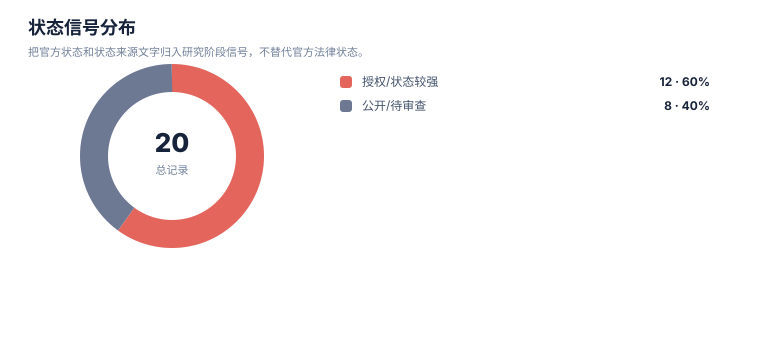

风险与 FTO 报告
案例：GLP1R_patent_case · 生成时间：2026-08-07T06:40:29.657750+00:00 · 本报告为研究资料，不构成法律意见。
研究范围
- 研究对象：GLP-1 receptor agonist (class landscape)；别名：semaglutide, 司美格鲁肽, liraglutide, tirzepatide, 替尔泊肽, orforglipron, oral GLP-1, 小分子GLP-1, GLP-1受体激动剂, GLP-1RA, glucagon-like peptide-1 receptor agonist, peptide GLP-1, GIP/GLP-1 dual
- 靶点/机制：GLP1R (glucagon-like peptide 1 receptor)
- 适应症：type 2 diabetes mellitus; obesity/overweight; cardiovascular risk
- 法域：目标法域 CN, US, WO, EP；关联扩展法域 WO, EP
- 截至日期：2026-08-07
- 深度：standard_analysis；报告语言：zh
- 来源目录：上游记录 — 条，去重 URL — 个；目录不是已访问结果集。
- 申请人消歧：Novo Nordisk A/S (诺和诺德), Eli Lilly and Company (礼来), Gilead Sciences, Inc. (吉利德), Zealand Pharma A/S (西兰制药), Sanofi (赛诺菲), Qilu Regor Therapeutics Inc. (齐鲁锐格), Eccogene (Shanghai) Co., Ltd. (诚益生物), Hangzhou Zhongmeihuadong Pharmaceutical (华东医药/中美华东), Hangzhou Derui Zhizhi / Mindrank AI (杭州德睿智药), Shionogi & Co., Ltd. (盐野义), Jiangsu Hengrui Pharmaceuticals (恒瑞医药), Fujian Shengdi Pharmaceutical (福建盛迪), Beijing Hanmi Pharmaceutical (北京韩美/韩美药品), Chongqing Kangding Medical Technology (重庆康丁医药), Gasherbrum Bio, Inc., Twist Bioscience Corporation, Amgen Inc., CMPD Licensing, LLC, Pfizer Inc., Boehringer Ingelheim
1. 概览
本报告按照“概览—专利初筛—逐件相关专利—权利要求特征比对—检索附录”的 FTO 工作流组织。高/中/低仅表示复核顺序，不代表侵权风险等级。
| 当前申请人/受让人 | 高相关 | 中相关 | 低相关 |
|---|---|---|---|
| — | — | — | — |
2. 风险边界
本报告识别的是值得继续核验的重叠信号和 FTO 工作队列，不是侵权、不侵权、有效性或自由实施法律意见。排序分数只代表复核优先级。
3. 拟实施方案与特征分级
未记录
| ID | 类型 | 重要性 | 技术特征 | 词簇 | IPC/CPC |
|---|---|---|---|---|---|
| — | — | — | — | — | — |
4. FTO 候选族排序
| 优先级 | 族 | 代表文献 | 主题 | 排序分数 | 完整命中 | 部分命中 | claim 类别 | 状态信号 | 状态来源 |
|---|---|---|---|---|---|---|---|---|---|
| — | — | — | — | — | — | — | — | — | — |
统计可视化
打开 FTO 风格统计总览 · 图表由当前案例 CSV/JSON 自动生成。
FTO 复核优先级

统计口径：按 fto-candidate-ranking.csv 的 review_priority 统计；是复核队列，不是侵权概率。
状态信号分布

统计口径：把官方状态和状态来源文字归入研究阶段信号，不替代官方法律状态。
权利要求类别分布

统计口径：按 claim-elements.csv 的 claim_category 记录数统计。
5. 逐件相关专利与权利要求特征比对
以下结构对应参考 FTO 报告中的“相关专利—相关度—对比结论—权利要求特征表”。本案例的 claim-elements 是结构化抽取记录，不是完整官方独立权利要求文本，因此“对比特征”和“覆盖状态”均为初筛证据标签，不能替代法律等同判断。
6. 风险雷达
| 风险层 | 触发条件 | 当前判断 | 必须补证据 |
|---|---|---|---|
| 高复核优先 | 核心对象、机制/用途和独立 claim 要素同时命中 | 进入 claim chart 队列，不等同于侵权 | 完整独立 claim + 官方状态 + 实施方案映射 |
| 中复核优先 | 主题或必要特征部分命中，法域/状态不完整 | 保留为重叠信号 | 国家阶段、分支、审查档案 |
| 边界候选 | 相邻通路、诊断或竞争方案，缺少对象级 claim linkage | 用于召回和创新空间，不计入核心 FTO | 对象特异性 claim、更多检索入口 |
7. 检索附录
7.1 技术特征、关键词与分类号
| 技术特征描述 | 关键词拓展 | 分类号 |
|---|---|---|
| — | — | — |
7.2 检索式与执行边界
| 编号 | 检索轮次 | 检索式 | 执行状态 |
|---|---|---|---|
| — | — | — | — |
8. FTO 结论边界
当前数据不足以确认自由实施或侵权。若要进入商业决策，应先对高优先族逐项制作 claim chart，并由目标法域专利律师复核法律状态和解释问题。聚合网站、摘要命中和初筛分数不能替代 CNIPA、USPTO、WIPO、EPO 或其他目标法域官方登记簿与完整权利要求文本。